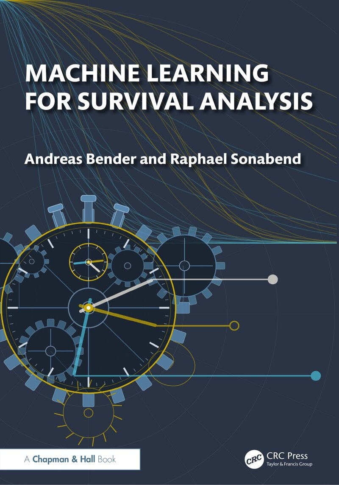

Machine Learning for Survival Analysis is available for pre-order
Our textbook with Chapman & Hall/CRC is now listed for pre-order. Andreas Bender and Raphael Sonabend introduce the basic principles of survival and event-history analysis before turning to specific learners, from established estimators to random forests, boosting and neural networks. A particular focus is on the evaluation of survival predictions and on reduction techniques, that is, methods that transform a survival task into a standard regression or classification task — the full text stays free to read online.